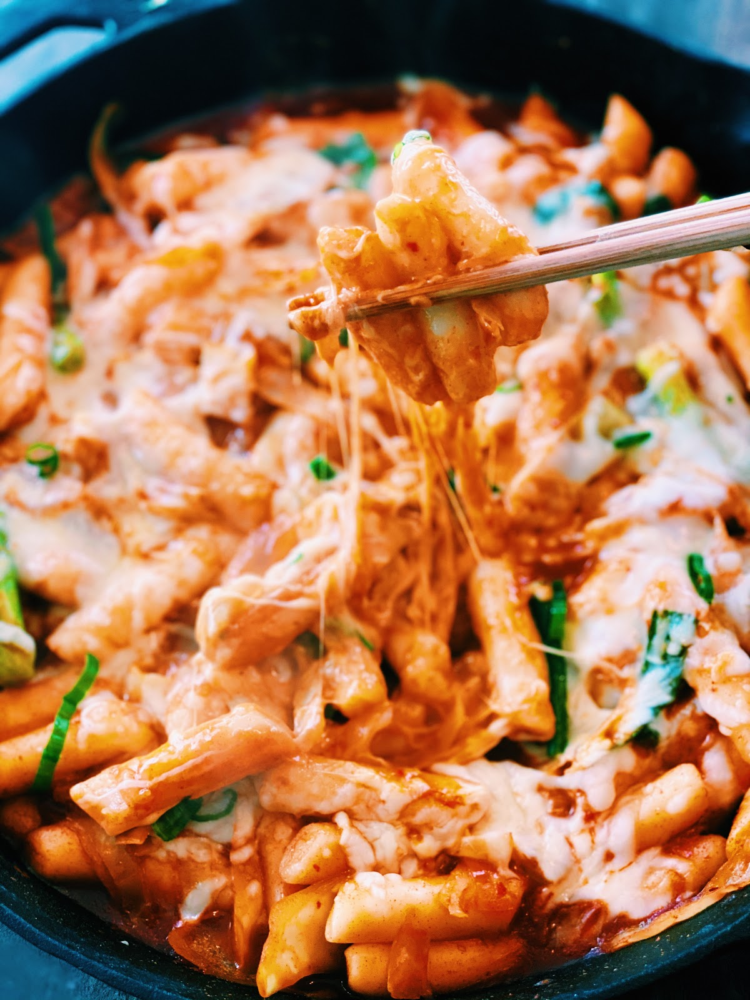
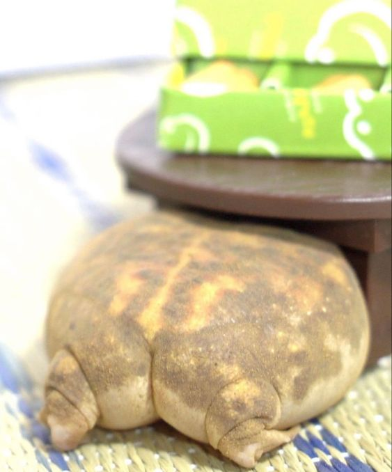
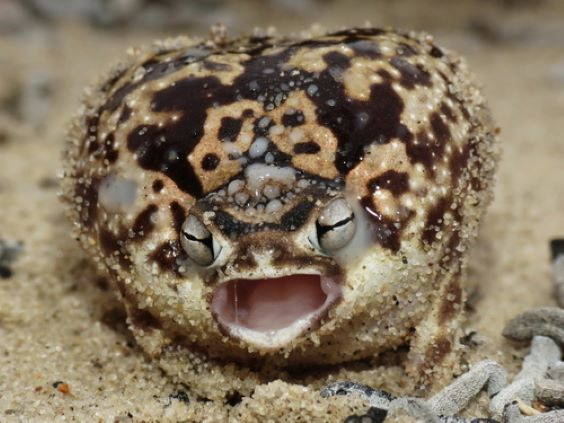
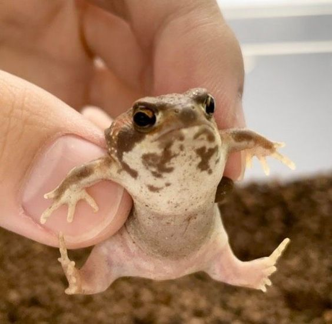
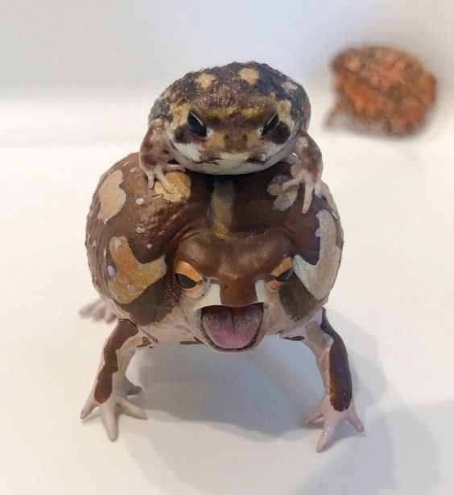
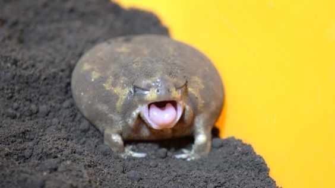

Top Fives
Xandria Regala
top five cities on my bucket list
- lucerne, switzerland
- pattaya city, thailand
- porto, portugal
- parga, greece
- kyoto, japan
I selected these cities for their captivating beauty and diverse exploration opportunities.
I want to immerse myself in the unique blend of natural landscapes and vibrant urban experiences
that each of these destinations has to offer.
five favorite foods
- tteokbokki

- chicharon bulaklak
- balut
- isaw
- turon
These top five foods hold a special place in my heart because most of them originate from my home country,
the Philippines, where I was born. I grew up savoring these foods. The other food item that isn't from the
Philippines is a Korean dish that I often crave.
top five pictures of desert rain frogs
- 
- a desert rain frog turning its back to you in disappointment.
- 
- a very angry desert rain frog, expressing its power through his war cry.
- 
- a desert rain frog held captive in the clutches of a human as punishment for his crimes.
- 
- a protective desert rain frog, keeping his lil' friend safe.
- 
- a very sleepy desert rain frog.
I like frogs, especially desert rain frogs because they're very cute.
I've selected these top five images because I found them most adorable and amusing.